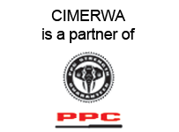

CIMERWA LAUNCHES BUY, BUILD, WIN PROMOTION |
||
| CIMERWA launched a promotion themed Buy, Build, Win, which is part of CIMERWA’s Strength Beyond the Bag campaign. Over the promotion included Rwf 70,000,000 in cash & goods prizes to be won by cement retailers & customers who buy & sell CIMERWA cement. “We focused on optimizing the plant and its operations over the past year. We are now turning our focus to build our brand equity, support & increase our customer base, increase our sales and serve the Rwandan market,” says Busi Legodi, Chief Executive Officer. Over the past year, CIMERWA has made great strides towards achieving the goal of producing 600,000 tons of cement annually. To date the company can boast of having reached 65% of their production capacity goal. CIMERWA has also created more employment, adding more jobs in the last year alone and continues to empower the communities they operate in by supporting various local projects. The campaign, being the largest and furthest reaching ever undertaken by CIMERWA will feature the following:-, • Over 70,000,000 Rwandan francs in prizes, • The opportunity for 112 retailers and end users to win either cash prizes of Rwf 250,000 each or goods worth Rwf 250,000 each. • The opportunity for another 144 retailers and end users to also win airtime vital for their day to day business communication • 2 Toyota Hilux pick-ups that will be given away as grand prizes at the end of the promotion period (Add the value) Previously, CIMERWA only had promotions based on price reductions and now we want to increase and spur our customer base from the distributor to end user by incentivizing the market base to buy CIMERWA products. Through this promotion, CIMERWA is looking at sharing all marginal profits to all customers and ensuring that all business partners with CIMERWA will gain. |
-01.jpg) |
|
CIMERWA LTD LAUNCHES DISTRIBUTION WAREHOUSE IN KIGALI, BRINGS CEMENT CLOSER TO THE BUILDERS |
||
| On Saturday the 9th July 2016, CIMERWA along with SIRWA Color Limited launched a distribution warehouse in Kicukiro district, in the city of Kigali. The SIRWA owned warehouse has a capacity to store 20,000 bags of cement equivalent to 1000 tonnes. The basis of the collaboration with SIRWA is to make CIMERWA’s products available everywhere in Kigali and its surroundings as the plant is located in Rusizi District, Western province of Rwanda. During a press briefing, CIMERWA’s Chief Executive Officer, Busisiwe Legodi, said that the firm is committed to partnering with many distributors across the country so that every Rwandan can conveniently access CIMERWA products. “Distributors like SIRWA will help us to avail CIMERWA products around the country which will facilitate more people to get our cement. Our responsibility is to make sure that our cement is available everywhere and we believe that through strong partnerships with distributors countrywide our products will reach the market with ease.” The SIRWA Director General, Elyvin Mironko said that the newly opened warehouse aims to serve all the people of Rwanda from the big builders to people living in the village. “I am very pleased and honored to partner with a proudly Rwandan manufacturer in terms of strengthening the Made in Rwanda initiative. Through our warehouse we aim to satisfy the market of cement and grow CIMERWA’s clientele.” According to Ms Legodi, CIMERWA is also looking forward to working with 16 more distributors in the whole country. CIMERWA, a proudly Rwandan cement producer, building materials and solutions partner will participate at the upcoming International Expo from 27th July to 10th August 2016. Come visit us at our stand near the children’s recreation area and learn more about our proudly Rwandan products. To contact the sales team: Call our toll free line on 3222 or send an email to sales@cimerwa.rw |
||
| CIMERWA LTD LAUNCHES ROAD SAFETY AWARENESS WEEK, LIFESAVING CAMPAIGN FOR RUSIZI RESIDENTS | ||
| Kigali, Rwanda 18 April, 2016 - CIMERWA Ltd, Rwanda’s only integrated cement producer is launching an initiative to spread road safety messages to local residents in Rusizi District and Rwanda as a whole as part of a campaign to tackle road accidents. | ||
| The week-long Road Safety Awareness Campaign will be held in communities around the CIMERWA factory located in Bugarama sector and culminate with a fun run. Having recently completed the construction of a new tarmac road connecting the main road to Bugarama trade center and the factory, CIMERWA saw an immediate need to engage with the community on the topic of road safety following reports of unsafe road behavior that increased residents’ risk exposure. In collaboration with local leaders and authorities, CIMERWA’s Road Safety Awareness Campaign will bring forth key messages and tips on safe road use aligned with the annual road safety campaign led by the Rwanda National Police. CIMERWA calls on local residents to join the campaign promoting road safety by embracing the slogan, ‘I use the road safely. We can all do the same.’ Throughout the road safety week, CIMERWA staff in collaboration with community leaders will engage with local residents on various platforms, through radio programs and by visiting schools and community centers. A dialogue will be initiated with all road users, pedestrians, cyclists and motorists on the topic of road safety and critical tips will be exchanged to encourage users to mitigate risks on the road. The Road Safety Awareness Campaign forms part of CIMERWA’s Corporate Social Responsibility of building awareness on the need for residents to behave responsibly and use the roads with regard for their personal safety and that of other users. It will culminate into a community fun run, fondly referred to as CIMERUN. The family day event will be held on Saturday 7th May, 2016 from 7am to 12pm at the Mashyuza Hot Springs, Muganza Sector, Rusizi District. “At CIMERWA we believe that sustainability is a journey and not a destination. We strive to operate in a manner that gives back to the community that we call home. We always endeavor to go beyond just producing quality cement by driving and actively participating in initiatives that affect the people of Rwanda”, said CIMERWA CEO Busisiwe Legodi. For more information and to register for the run visit www.cimerwa.rw or call our toll free line on 3222 Released 18 April 2016 |
||
CIMERWA OFFICIALLY COMMISSIONS NEW 600,000 TON PER ANNUM PRODUCTION PLANT |
||
| CIMERWA, the largest Rwandan cement producer today officially commissioned its new production plant, setting the stage for ramping up local supply to meet the growing national demand. Designed to produce 600,000 tons per annum compared to the old plant which could only manage 100,000 tons annually, the new plant is the latest addition to Rwanda’s growing manufacturing base of local world class products destined for the export market. The commissioning signals the official handover of the new plant by the contractor to CIMERWA after a successful testing phase that took three months to ensure that each part of the USD 170 million plant is in perfect working order. CIMERWA Chief Executive Officer Mrs. Busi Legodi said during the launch, presided by his Right Honorable Prime Minister of Rwanda Mr. Anastase Murekezi that it confirmed the capability of Rwanda to meet a substantial portion of its latent cement demand, which registered a 19.5 per cent rise in the first three months of 2015, through local production. She explained that CIMERWA had sufficient and high quality limestone reserves to produce the best quality cement for both the local and export markets. “We are already exporting cement to Burundi and Eastern DR Congo where the quality of the product is quite renowned”, she added pointing out that |
||
| it was important for cement customers to focus on the quality and durability of structures. She explained that Rwanda’s housing sector, which is currently estimated to have a deficiency of a quarter of a million houses in Kigali City alone, was at a critical threshold of standards. “We need to embrace high standards in the construction sector, a factor that will ensure investors get real value for their investments,” she noted. In addition to supplying cement to the market, CIMERWA will be sharing lessons and modern concrete skills with players in the local construction sector, which grew by 13 per cent in the first quarter of 2105, as a way of building further human capacity. This will include a number of training workshops and specific technical site services. The plant launch follows the firm’s change of the product pack design and colours in a move that provided Rwanda with its first bright boldly coloured cement packaging. At the same time the company adopted a new corporate identity that is a remarkable departure from the old closed green diamond to an open shiny blue pyramid that reflects its journey to a bright future. For more information contact Sam Kasule, CIMERWA Head of Commercial Services email Sam.Kasule@cimerwa.rw. Released in August 18, 2015 |
||
CCIMERWA LAUNCHES NEW CORPORATE IDENTITY LEADING UP TO PLANT COMPLETION |
||
CIMERWA, Rwanda’s largest cement producer, today unveiled its new corporate identity and product packaging.
“It is with great pride and excitement that we present our new corporate identity today. We have moved from the previous green to a bold blue reflecting the refreshing nature of the business as we go through a rebirth and repositioning of CIMERWA. The previous logo was a closed diamond; the new logo is open, symbolizing the bright future of the company and the journey we will be making together towards the top” explains Mrs Busisiwe Legodi, Chief Executive Officer at CIMERWA. The launch of the new corporate identity comes as CIMERWA puts the finishing touches to its new, state-of-the-art production facility in Bugarama. The new plant, which will boost CIMERWA’s manufacturing capacity by six times, will commence production early in the second half of this year. The new look CIMERWA cement bags will see the general purpose cement, popularly known as 32.5, sporting a bold blue color while the 42.5, used mostly for construction, will come in bright red packaging. Speaking at a media briefing in Kigali today Mrs Legodi confirmed that construction of the plant is now complete and undergoing structured tests in line with global best practice on cement manufacturing. “The testing phase, which is the most important in preparing the plant for production, will take at least two months. Our aim is to certify that the new plant operates efficiently and effectively when it is running fully and produces a quality cement to meet Rwanda’s growing demand,” she added. CIMERWA’s new corporate identity symbolises the strength of a brand built on solid, sustainable partnerships; a company that goes beyond producing ‘a bag of cement’. CIMERWA works in close partnership with the Government of Rwanda, ensuring its business objectives are aligned to those set out in EDPRS 2 and Vision 2020 - from supporting Rwanda’s economic development, to good corporate citizenship through involvement with the community and investing in staff. Mrs Legodi thanked government representatives for their ongoing support for the project and reiterated her commitment to working hand in hand with them. Rwanda currently imports the bulk of its cement requirements; CIMERWA expects that this is going to change as it moves towards meeting the national demand through local production. With the new identity, CIMERWA is now positioned firmly as a regional company that will also be exporting cement to the neighboring markets of Burundi and Eastern DRC.“We have worked closely with our counterparts at PPC Ltd, South Africa’s largest cement company and a major shareholder in CIMERWA, harnessing their 123 years of experience to deliver this project” Mrs Legodi explains. In conclusion Mrs. Legodi said “we have been in operation for over 30 years and expect the future to offer CIMERWA immense opportunities for growth and participation in Rwanda’s and the region’s development.” For more information contact Duncan Ondigo, duncan.ondigo@strategicafrica.com +250 784 01 88 70 OR Marie Ange Rukundo marieange.rk@strategicafrica.com +250 789 296 037 |
||
CIMERWA TAKES A NEW LOOK |
||
| Move comes as company readies new 600,000 ton per annum plant CIMERWA, Rwanda’s only integrated cement producer has rebranded to take on a new corporate logo. According to the firm, which also celebrates its thirtieth anniversary this year, the new corporate identity and colors reflect a new era in its journey of participating in building the Rwanda economy and that of the region. CIMERWA Chief Executive Officer, Busi Legodi said that the firm had adopted a bold blue that is dominant, distinct, versatile yet simple. “Our new corporate identity is significant due to the turning point we are in today as a company, with the new cement production plant nearly complete and looking at better understanding and servicing potential markets in the DRC and Burundi,” she added. Legodi noted that the new USD 170 million investment has the capacity to produce 600,000 tons of cement per year. She said that civil works at the new plant were 94 per cent complete with much of the work now focusing on finishing the electrical and mechanical engineering installations. “We should be ready to commission the plant by end of the first quarter next year,” she said. Legodi noted that CIMERWA had over the years established strong partnerships with key stakeholders in the country, including the local community, leaders and staff. “We have recently assisted the community in Bugarama to set up a carpentry workshop, a knitting kit club, tailoring group and are also supporting the local traditional dance troupe next to the plant,” she said, adding that the carpenters were ready to supply Rusizi district and environs with ready-made furniture. These, she noted were projects that had come on line to complement other long running ones including the medical clinic, nursery and primary schools. “The clinicians provide medical treatment and conduct community outreach programs to address public health issues,” she explained noting that the firm had also added a new ambulance that will be very useful in addressing medical emergencies. CIMERWA also supplies fresh piped water to the nearby community. With the launch of the new corporate identity, CIMERWA expects to deepen its corporate social investment programs, partner with its strategic investor PPC Limited of Southern Africa to deliver technical expertise and ensure that the local construction sector benefits from its deep insight and experience. For more information contact Sam Kasule, Commercial Manager CIMERWA. Email sam.kasule@cimerwa.rw or Duncan Ondigo, Strategic Great Lakes. EmailDuncan.ondigo@strategicafrica.com Tel. +250 784 018870.Released in October 27, 2014 |
||
| Home | About | Products | Sustainability | Projects | Pressroom | Careers | Contacts | Connect with us |  | |
| Who we are |
About Board of Directors Management |
Products CIMERWA 42.5 CIMERWA 32.5 |
Sustainability CSR |
Projects | Pressroom Gallery | Careers Gallery | Contact us | |||